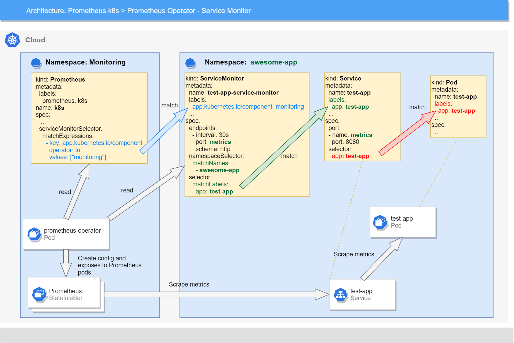
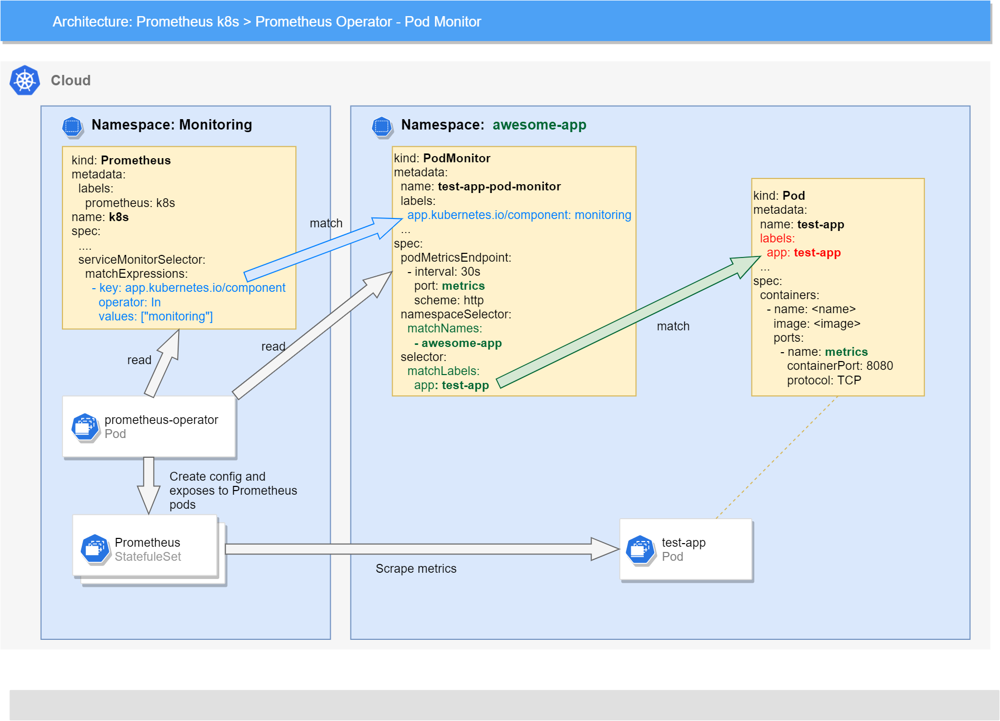

This section describes the various configurations that can be performed on Monitoring.
Configuration¶
This section describes all the configurations and extension points that are provided by Monitoring.
Frequently used Installation Options¶
This section is intended to describe the most frequently used options and what parameters should be set during the installation.
Use PV as Storage¶
To maintain data across deployments and version upgrades, the data must be persisted to some volume other
than emptyDir, allowing it to be reused by Pods after an upgrade.
Kubernetes supports several kinds of storage volumes. The Monitoring Operator uses Prometheus Operator to control the
Prometheus deployment. The Prometheus Operator works with PersistentVolumeClaims, which supports the underlying
PersistentVolume to be provisioned when requested.
This document assumes a basic understanding of PersistentVolumes, PersistentVolumeClaims, and their provisioning.
Storage with Dynamic Provisioning¶
Automatic provisioning of storage requires an already existing StorageClass.
For best results, use volumes that have high I/O throughput.
The StorageClass that was created can be specified in the storage section in the Prometheus resource.
prometheus:
storage:
volumeClaimTemplate:
spec:
# Specify storage class to create volume
storageClassName: nfs-dynamic-provisioning
resources:
requests:
# Specify required storage size to create volume
storage: 10Gi
To configure Grafana to use storage with any specific StorageClass, specify the following.
grafana:
dataStorage:
accessModes:
- ReadWriteOnce
# Specify required storage size to create volume
size: 2Gi
# Specify storage class to create volume
class: local-storage
Manual Storage Provisioning¶
The monitoring deploy parameters allow you to support arbitrary storage through a PersistentVolumeClaim.
The easiest way to use a volume that cannot be automatically provisioned (for whatever reason) is to use a label selector alongside a manually created PersistentVolume.
For example, using hostPath persistence volume might be accomplished with the following specifications.
prometheus:
# Vanilla Prometheus image use user and group nobody = 65534
# So for use PV it is better to use user nobody = 65534
securityContext:
fsGroup: 65534
runAsUser: 65534
# Because hostPath PV created on specific node, we must bind Prometheus on this node
nodeSelector:
kubernetes.io/hostname: worker1
storage:
volumeClaimTemplate:
spec:
resources:
requests:
storage: 10Gi
selector:
# Match PV by label on PV
matchLabels:
app: prometheus
For Grafana, there is no ability to use an already created hostPath volume. You can use only dynamic provisioning.
Specify custom requests and limits¶
TBD
Override SecurityContext¶
TBD
Integration with external systems¶
TBD
Metrics Collectors and Long Term Storages¶
TBD
Alerting Systems¶
TBD
Dashboards¶
TBD
User Extension Points¶
This section contains description of all extension points that can be used by users or components.
Custom Resources in application namespaces¶
Currently, Monitoring provides only Custom Resources, which can create applications in its namespace, as extension points. Other extension points also exist, but in places in the monitoring namespace where the application usually has no access.
Difference between ServiceMonitor and PodMonitor¶
At first sight, ServiceMonitor and PodMonitor look the same and fulfill the same role. However, they are different custom resources.
In simple terms, ServiceMonitor is used when your microservice has Service (kubernetes object, which balances the traffic over some instances), while PodMonitor is used when your microservice does not have Service, but contains either a Pod, or a DaemonSet, or a Job, and so on.
Before taking a look at how these features work under the hood, it would be appropriate to know the Prometheus discovery abilities.
Prometheus can discover any Kubernetes objects by itself using specified rules. Prometheus supports discovery by:
Depending on the discovery type, Prometheus discovers different resources and adds different meta labels to them.
So when prometheus-operator collects all custom resources and processes them, it converts ServiceMonitor and PodMonitor using different discovery types.
ServiceMonitor is converted using a job with discovery by Endpoints.
For more information on Endpoints, refer to the official Kubernetes documentation at https://kubernetes.io/docs/concepts/services-networking/service/. In brief, Endpoints can be generated by Pods linked to Service and manually created by any static IPs. It may be useful in cases when you want to create Service into Kubernetes on any application on cloud.
For example, the following ServiceMonitor config,
apiVersion: monitoring.coreos.com/v1
kind: ServiceMonitor
metadata:
labels:
app.kubernetes.io/component: monitoring
app.kubernetes.io/managed-by: monitoring-operator
app.kubernetes.io/name: node-exporter-service-monitor
name: monitoring-node-exporter
namespace: monitoring
spec:
endpoints:
- bearerTokenSecret:
key: ''
interval: 30s
port: metrics
relabelings:
- action: replace
regex: (.*)
replacement: $1
sourceLabels:
- __meta_kubernetes_pod_node_name
targetLabel: node
scrapeTimeout: 10s
jobLabel: node-exporter
namespaceSelector:
matchNames:
- monitoring
selector:
matchExpressions:
- key: platform.monitoring.app
operator: In
values:
- node-exporter
converts in the following Prometheus job.
- job_name: serviceMonitor/monitoring/monitoring-node-exporter/0
honor_timestamps: true
scrape_interval: 30s
scrape_timeout: 10s
metrics_path: /metrics
scheme: http
follow_redirects: true
relabel_configs:
- source_labels: [job]
separator: ;
regex: (.*)
target_label: __tmp_prometheus_job_name
replacement: $1
action: replace
...
kubernetes_sd_configs:
- role: endpoints # Used discovery by endpoints
kubeconfig_file: ""
follow_redirects: true
namespaces:
names:
- monitoring
PodMonitor is converted using a job with discovery by Pod.
There are no any specific user cases. Discover by Pod just allows to find all the pods that satisfy specified conditions and start metrics collection from them.
For example, the following PodMonitor config,
apiVersion: monitoring.coreos.com/v1
kind: PodMonitor
metadata:
labels:
app.kubernetes.io/component: monitoring
app.kubernetes.io/managed-by: monitoring-operator
app.kubernetes.io/name: alertmanager-pod-monitor
k8s-app: alertmanager-pod-monitor
name: monitoring-alertmanager-pod-monitor
namespace: monitoring
spec:
jobLabel: k8s-app
namespaceSelector: {}
podMetricsEndpoints:
- interval: 30s
port: web
scheme: http
scrapeTimeout: 10s
selector:
matchLabels:
app: alertmanager
converts in the following Prometheus job.
- job_name: podMonitor/monitoring/monitoring-alertmanager-pod-monitor/0
honor_timestamps: true
scrape_interval: 30s
scrape_timeout: 10s
metrics_path: /metrics
scheme: http
follow_redirects: true
relabel_configs:
- source_labels: [job]
separator: ;
regex: (.*)
target_label: __tmp_prometheus_job_name
replacement: $1
action: replace
...
kubernetes_sd_configs:
- role: pod # Used discovery by pods
kubeconfig_file: ""
follow_redirects: true
namespaces:
names:
- monitoring
ServiceMonitor¶
The ServiceMonitor Custom Resource (CR) allows to provide how metrics should be collected from a microservice by Prometheus.
ServiceMonitor is used when:
- You have to configure metrics collection from microservices which have Service.
- You have to configure metrics collection from some microservices under one Service.
For example, the ServiceMonitor can look like the following.
apiVersion: monitoring.coreos.com/v1
kind: ServiceMonitor
metadata:
name: kubelet-service-monitor
labels:
k8s-app: kubelet-service-monitor
app.kubernetes.io/name: kubelet-service-monitor
app.kubernetes.io/component: monitoring # Mandatory label
spec:
endpoints:
- honorLabels: true
interval: 30s
port: https-metrics
scheme: https
jobLabel: k8s-app
namespaceSelector:
matchNames:
- monitoring
selector:
matchLabels:
k8s-app: kubelet
In the above example, the metrics are collected with the following settings:
- The metrics are collected with a job with a
k8s-applabel. - The metrics are collected from all pods with a
k8s-app: kubeletlabel. - The metrics are collected from all discovered pods from the port with the
https-metricsname and with interval30s.
The following schema illustrates how prometheus-operator discovers ServiceMonitor, processes it, and applies the configuration to Prometheus:

For more information about all available fields in ServiceMonitor, refer to the official documentation at
https://github.com/prometheus-operator/prometheus-operator/blob/v0.79.2/Documentation/api.md#servicemonitor.
ServiceMonitor and container label¶
If you want to see the label container in your metrics collected by Prometheus/VictoriaMetrics you must expose
the port used for metrics not only in Service but in the Pod. Otherwise, all metrics won't contain this label.
It means that you need to expose the port:
- In Kubernetes Service
kind: Service
apiVersion: v1
...
spec:
ports:
- name: metrics
protocol: TCP
port: 9900
targetPort: 9900
- In the Pod
kind: Pod
apiVersion: v1
...
spec:
containers:
- name: xxx
ports:
- name: metrics
containerPort: 9900
protocol: TCP
Why it's needed?
The official Prometheus documentation:
https://prometheus.io/docs/prometheus/latest/configuration/configuration/#endpoints
tells us that discovery by the endpoint will add the meta label __meta_kubernetes_pod_container_name only in case:
- If the endpoints belong to a service, all labels of the
role: servicediscovery are attached - For all targets backed by a pod, all labels of the
role: poddiscovery are attached
The official Kubernetes documentation doesn't contain anything about roles for endpoints. So it seems that this concept is in Prometheus Kubernetes SD.
So it should work as follows:
- Service allows you to expose ports independently has the pod already exposed ports or not
- So for Prometheus Kubernetes SD exist two cases:
- If the port is exposed in Service but isn't exposed in Pod - it seems that in case Prometheus will use
role: service - If the port is exposed in Service and it is exposed in Pod - it seems that in case Prometheus will use
role: pod
In the case, when the port in Pod wasn't exposed, Prometheus attached to meta labels information about the Service that doesn't contain the container name. In all cases, Prometheus can collect metrics from endpoints. Discovery type affects only the list of meta labels and result label list.
PodMonitor¶
The PodMonitor Custom Resource (CR) allows to provide how metrics should be collected from a microservice by Prometheus.
PodMonitor is used when:
- You have to configure the metrics collection from a pod directly without Service.
apiVersion: monitoring.coreos.com/v1
kind: PodMonitor
metadata:
labels:
app.kubernetes.io/name: monitoring-nginx-ingress-pod-monitor
app.kubernetes.io/component: monitoring # Mandatory label
name: monitoring-nginx-ingress-pod-monitor
spec:
jobLabel: k8s-app
namespaceSelector:
any: true
podMetricsEndpoints:
- interval: 30s
port: prometheus
scheme: http
selector:
matchLabels:
app.kubernetes.io/name: ingress-nginx
In the above example, the metrics are collected with the following settings:
- The metrics are collected with a job with a
k8s-applabel. - The metrics are collected from all the pods with a
app.kubernetes.io/name: ingress-nginxlabel. - The metrics are collected from all discovered pods from the port with a
httpname and with interval30s
The following schema illustrates how prometheus-operator discovers PodMonitor, processes it, and applies the configuration to Prometheus:

For more information about all available fields in PodMonitor, refer to the official documentation at
https://github.com/prometheus-operator/prometheus-operator/blob/v0.79.2/Documentation/api.md#podmonitor.
Probe¶
The Probe Custom Resource (CR) allows to provide a list of static endpoints, or configure ingresses discovery to the Prometheus
config and make checks for them using the Blackbox exporter.
This custom resource was created because the already existing resources such as ServiceMonitor and PodMonitor do not allow to specify more that one endpoint. However, for the Blackbox exporter, it is a usual case when it is required to specify some static URLs to check them.
Note: Probe works only when the Blackbox exporter is deployed. If it is absent, you can configure Probe to use any external Blackbox exporter.
Probe is used when:
- You have to configure the metrics collection about the availability of any static URLs.
- You have to configure the metrics collection about the availability of any Ingresses.
Note: In the following example, use the http_2xx module. But this module should be pre-configured
in the Blackbox exporter to use it.
apiVersion: monitoring.coreos.com/v1
kind: Probe
metadata:
name: blackbox-ingress-probe
labels:
app.kubernetes.io/component: monitoring # Mandatory label
spec:
jobName: http-get
interval: 30s
module: http_2xx
prober:
url: blackbox-exporter.monitoring.svc:9115
scheme: http
path: /probe
targets:
ingress:
selector:
matchLabels:
name: prometheus
namespaceSelector:
matchNames:
- monitoring
Or with static URLs:
Note: Please keep in mind that URLs should be accessible for Blackbox exporter to correct probe.
apiVersion: monitoring.coreos.com/v1
kind: Probe
metadata:
name: blackbox-static-urls-probe
labels:
app.kubernetes.io/component: monitoring # Mandatory label
spec:
jobName: http-get
interval: 30s
module: http_2xx
prober:
url: blackbox-exporter.monitoring.svc:9115
scheme: http
path: /probe
targets:
staticConfig:
static:
- 'http://example.com'
- 'https://example.com'
- 'http://google.com'
- 'https://google.com'
For more information about all available fields in Probe, refer to the official documentation at
https://github.com/prometheus-operator/prometheus-operator/blob/v0.79.2/Documentation/api.md#probe.
AlertmanagerConfig¶
Note: This resource is described in the user section because it is possible to add the settings by a user. The Alertmanager configuration looks as an operation for admin users. Be careful what you specify in the settings and do not explicitly specify passwords or other sensitive data.
The AlertmanagerConfig Custom Resource (CR) allows you to add settings in the Alertmanager configuration by separated parts. It allows to add settings for Alertmanager as route settings and new receivers by a user or with a component. In case of using VictoriaMetrics VMAlertmanagerConfig, route and receivers are mandatory fields otherwise your inhibit rules won't be added into VictoriaMetrics configuration secret, and therefore they won't be applied at all!
AlertmanagerConfig is used when:
- You have to configure the alerts grouping.
- You have to configure the notification channels to send alerts.
For example, the AlertmanagerConfig can look like the following.
apiVersion: monitoring.coreos.com/v1alpha1
kind: AlertmanagerConfig
metadata:
name: slack-config-example
labels:
app.kubernetes.io/component: monitoring # Mandatory label
spec:
route:
groupBy: ['job']
groupWait: 30s
groupInterval: 5m
repeatInterval: 12h
receiver: 'slack-example'
receivers:
- name: 'slack-example'
slackConfig:
- channel: <channel_id>
apiURL:
name: 'slack-config'
key: 'apiUrl'
---
apiVersion: v1
kind: Secret
type: Opaque
metadata:
name: slack-config
data:
apiUrl: <base64_encoded> # For example in base64 can be encode "https://slack.com/app_redirect?app=...."
For more information about AlertmanagerConfig and its examples, refer to the following official documentation:
- Prometheus-operator API at https://github.com/prometheus-operator/prometheus-operator/blob/v0.79.2/Documentation/api.md#alertmanagerconfig
- Configure Alertmanager at https://github.com/prometheus-operator/prometheus-operator/blob/v0.79.2/Documentation/user-guides/alerting.md
- Configure VMAlertmanager at https://docs.victoriametrics.com/operator/resources/vmalertmanager/?highlight=alertmanager
CustomScaleMetricRule¶
The CustomScaleMetricRule Custom Resource (CR) allows to provision of custom metrics that should be used in
Metric API and will be available for Horizontal Pod Autoscaler (HPA).
This CR was designed for cases when the application wants to use custom metrics in HPA. But by default, prometheus-adapter allows adding new metrics into Metrics API only to cluster-admin users. So we designed this type of resource which allows the operator to discover a list of custom metrics and add them automatically.
To configure metrics that will expose as custom metrics in Metrics API you can use the same syntax as in prometheus-adapter: https://github.com/kubernetes-sigs/prometheus-adapter/blob/master/docs/config-walkthrough.md#configuring-the-adapter
For example:
apiVersion: monitoring.qubership.org/v1alpha1
kind: CustomScaleMetricRule
metadata:
name: {{ .Values.name }}-custom-metric-rule
labels:
app.kubernetes.io/component: monitoring
spec:
rules:
- seriesQuery: '{__name__=~"prometheus_example_app_load",namespace!="",pod!=""}'
name:
matches: "prometheus_example_app_load"
resources:
overrides:
namespace:
resource: "namespace"
pod:
resource: "pod"
metricsQuery: '<<.Series>>{<<.LabelMatchers>>}'
GrafanaDashboard¶
The GrafanaDashboard Custom Resource (CR) allows to provide Grafana dashboards into Grafana. The dashboard should be in the JSON format, which you can get from the Grafana UI using export.
All GrafanaDashboard custom resources are discovered by the grafana-operator. It collects them, processes, reads the JSON from custom resources and uses Grafana's Dashboard API to create or update the dashboard in an attached Grafana instance. For more information, refer to https://grafana.com/docs/grafana/latest/http_api/dashboard/.
GrafanaDashboard is used when:
- You have to provide a Grafana dashboard with your service, as a component's part.
You can use the following options to provide the dashboard using the GrafanaDashboard CR:
- JSON inline into CR
- GrafanaDashboard refer to ConfigMap which contains JSON
- GrafanaDashboard contains dashboard id from grafana.com
- GrafanaDashboard contains URL for download dashboard
GrafanaDashboard Known Issues¶
Currently, one major issue is known related to the dashboard JSON size.
All Kubernetes resources (default such as ConfigMap, and custom such as GrafanaDashboard) that you created are stored in Etcd.
Etcd has a limit of 1 MB (megabyte) for each stored resource. It means that no resource can have a total size greater than 1 MB.
A typical dashboard has a size of about 100-300 KB. So the total size of GrafanaDashboard is about 100-300 KB.
In the first case, kubectl generates a special annotation.
The annotation contains a serialized representation of the last processes resource.
It means that the total size of resource processes in the first case (kubectl apply -f ...) has a size
x2 compared to the original resource. For example, the GrafanaDashboard resource can have a size
of about 200-600 KB or more.
To solve this problem:
- Decrease the size of the dashboard.
- Upload the dashboard to any storage (for example Nexus) and refer to it by a URL in GrafanaDashboard. For more information, see Dashboard by URL.
Inline JSON¶
This option allows to provide a Grafana dashboard's JSON inline into a custom resource.
apiVersion: integreatly.org/v1alpha1
kind: GrafanaDashboard
metadata:
name: inline-json-dashboard
labels:
app.kubernetes.io/component: monitoring # Mandatory label
spec:
# Dashboard will insert directly into custom resource
json: |+
{ ... }
Dashboard in ConfigMap¶
This option allows to reference from the GrafanaDashboard CR to ConfigMap.
For example,
---
kind: ConfigMap
apiVersion: v1
metadata:
name: dashboard-in-cm # ConfigMap name
data:
# Key with data in ConfigMap
dashboard: |+
{ ... }
---
apiVersion: integreatly.org/v1alpha1
kind: GrafanaDashboard
metadata:
name: dashboard-from-cm
labels:
app.kubernetes.io/component: monitoring # Mandatory label
spec:
json: '' # Mandatory field from CRD
configMapRef:
name: dashboard-in-cm # Need specify ConfigMap name
key: dashboard # Need specify key in ConfigMap
Dashboard from Grafana Official Site¶
This option allows to download the dashboard using the ID from official site, https://grafana.com.
Warning: To use such configuration, you must have access from cloud (from grafana-operator) to the official site, https://grafana.com.
For example,
apiVersion: integreatly.org/v1alpha1
kind: GrafanaDashboard
metadata:
name: dashboard-from-grafana-com
labels:
app.kubernetes.io/component: monitoring # Mandatory label
spec:
json: '' # Mandatory field from CRD
grafanaCom:
id: 9614 # ID of dashboard on grafana.com
revision: 1 # Dashboard's revision
The grafana-operator downloads the dashboard in this example, https://grafana.com/grafana/dashboards/9614.
Dashboard by URL¶
This option allows to download the dashboard using a URL from any server.
Note: This option can allow to solve issues faced with a large GrafanaDashboard size. For more details, see GrafanaDashboard Known Issues.
For example,
apiVersion: integreatly.org/v1alpha1
kind: GrafanaDashboard
metadata:
name: helm-example-dashboard-by-url
labels:
app.kubernetes.io/component: monitoring # Mandatory label
spec:
json: '' # Mandatory field from CRD
# Dashboard will download by specified URL and after insert into custom resource
# in filed 'json'. So result custom resource will contains both fields and 'url' and 'json'
url: "http://any-host.org/any/path/to/dashboard.json"
Useful examples of Users Extensions¶
This section contains examples of how to configure Monitoring Custom Resources in various cases.
AlertmanagerConfig for Email¶
This example shows how you can configure Alertmanager to send a notification by an email.
Note: This example is expected to be used on an STMP server like Outlook. It has not been tested on other SMTP servers.
Example of AlertmanagerConfig,
apiVersion: v1
kind: Secret
type: Opaque
metadata:
name: email-config
data:
authPassword: <base64_encoded>
---
apiVersion: monitoring.coreos.com/v1alpha1
kind: AlertmanagerConfig
metadata:
name: email-config
labels:
app.kubernetes.io/component: monitoring # Mandatory label
spec:
route:
groupBy: ['job']
groupWait: 30s
groupInterval: 5m
repeatInterval: 12h
receiver: 'email-qubership'
receivers:
- name: 'email-qubership'
emailConfigs:
- smarthost: 'testmail.qubership.com:25'
authUsername: <integration_smtp_user>
authPassword:
name: 'email-config'
key: 'authPassword'
tlsConfig:
insecureSkipVerify: true
sendResolved: true
from: alertmanager@testmail.qubership.com
to: <user_to_send_notifications>
AlermanagerConfig for Rocket.Chat¶
This example shows how you can configure Alertmanager to send a notification in Rocket.Chat.
Note: This example is expected to be used on the Rocket.Chat server, https://rc.qubership.com/plt.
If you want to use another instance, you have to change the URL.
The URL with the token to send alerts can be copied from Rocket.Chat.
Example of AlertmanagerConfig,
apiVersion: monitoring.coreos.com/v1alpha1
kind: AlertmanagerConfig
metadata:
name: rocketchat-config
labels:
app.kubernetes.io/component: monitoring # Mandatory label
spec:
route:
groupBy: ['job']
groupWait: 30s
groupInterval: 5m
repeatInterval: 12h
receiver: 'rocketchat-qubership'
receivers:
- name: 'rocketchat-qubership'
webhookConfig:
- url: 'https://rc.qubership.com/plt/hooks/<token>'
sendResolved: true
You have to also add a custom script in the integration. It will process the JSON, which sends the Alertmanager and converts it to the formatted message in Rocket.Chat.
Script for integration
class Script {
process_incoming_request({
request
}) {
console.log(request.content);
var alertColor = "warning";
if (request.content.status == "resolved") {
alertColor = "good";
} else if (request.content.status == "firing") {
alertColor = "danger";
}
let finFields = [];
for (i = 0; i < request.content.alerts.length; i++) {
var endVal = request.content.alerts[i];
var elem = {
title: "alertname: " + endVal.labels.alertname,
value: "*instance:* " + endVal.labels.instance,
short: false
};
finFields.push(elem);
if (!!endVal.annotations.summary) {
finFields.push({
title: "summary",
value: endVal.annotations.summary
});
}
if (!!endVal.annotations.severity) {
finFields.push({
title: "severity",
value: endVal.annotations.severity
});
}
if (!!endVal.annotations.description) {
finFields.push({
title: "description",
value: endVal.annotations.description
});
}
}
return {
content: {
username: "Prometheus Alert",
attachments: [{
color: alertColor,
title_link: request.content.externalURL,
title: "Prometheus notification",
fields: finFields
}]
}
};
return {
error: {
success: false
}
};
}
}
mTLS Config¶
Usually, the TLS traffic wraps and terminates on Kubernetes or OpenShift balancers.
But some customers or on some internal environments can request to close all connections by TLS. In this case, for Prometheus also it is required to specify which certificates should be used to connect to the microservice.
ServiceMonitor, PodMonitor, and Probe already support TLS/mTLS.
This functionality is designed in such a way that certificates must be kept in secrets, which are located in the same namespace where deploy microservice and CR for Monitoring.
ServiceMonitor example with TLS config,
apiVersion: monitoring.coreos.com/v1
kind: ServiceMonitor
metadata:
annotations:
meta.helm.sh/release-name: monitoring-operator-monitoring
meta.helm.sh/release-namespace: monitoring
labels:
app.kubernetes.io/component: monitoring # Mandatory label
app.kubernetes.io/name: etcd-service-monitor
name: monitoring-etcd-service-monitor
namespace: monitoring
spec:
endpoints:
- interval: 30s
port: metrics
scheme: https
scrapeTimeout: 10s
tlsConfig:
ca:
secret:
key: etcd-client-ca.crt # Name of key with CA cert from secret
name: kube-etcd-client-certs # Secret name
cert:
secret:
key: etcd-client.crt # Name of key with Cert from secret
name: kube-etcd-client-certs # Secret name
keySecret:
key: etcd-client.key # Name of key with KeySecret from secret
name: kube-etcd-client-certs # Secret name
jobLabel: k8s-app
namespaceSelector:
matchNames:
- kube-system
selector:
matchLabels:
k8s-app: etcd
---
kind: Secret
apiVersion: v1
metadata:
name: kube-etcd-client-certs
namespace: monitoring
labels:
app.kubernetes.io/component: monitoring
app.kubernetes.io/name: kube-etcd-client-certs
data:
etcd-client-ca.crt: <CA_cert_base64_encoded_content>
etcd-client.crt: <Cert_base64_encoded_content>
etcd-client.key: <Key_base64_encoded_content>
type: Opaque
PodMonitor example with TLS config,
apiVersion: monitoring.coreos.com/v1
kind: PodMonitor
metadata:
labels:
app.kubernetes.io/name: monitoring-nginx-ingress-pod-monitor
app.kubernetes.io/component: monitoring # Mandatory label
name: monitoring-nginx-ingress-pod-monitor
spec:
jobLabel: k8s-app
namespaceSelector:
any: true
podMetricsEndpoints:
- interval: 30s
port: prometheus
scheme: http
tlsConfig:
ca:
secret:
key: nginx-client-ca.crt # Name of key with CA cert from secret
name: nginx-client-certs # Secret name
cert:
secret:
key: nginx-client.crt # Name of key with Cert from secret
name: nginx-client-certs # Secret name
keySecret:
key: nginx-client.key # Name of key with KeySecret from secret
name: nginx-client-certs # Secret name
selector:
matchLabels:
app.kubernetes.io/name: ingress-nginx
---
kind: Secret
apiVersion: v1
metadata:
name: nginx-client-certs
namespace: monitoring
labels:
app.kubernetes.io/component: monitoring
app.kubernetes.io/name: nginx-client-certs
data:
nginx-client-ca.crt: <CA_cert_base64_encoded_content>
nginx-client.crt: <Cert_base64_encoded_content>
nginx-client.key: <Key_base64_encoded_content>
type: Opaque
Probe example with TLS config,
apiVersion: monitoring.coreos.com/v1
kind: Probe
metadata:
name: blackbox-ingress-probe
labels:
app.kubernetes.io/component: monitoring # Mandatory label
spec:
jobName: http-get
interval: 30s
module: http_2xx
prober:
url: blackbox-exporter.monitoring.svc:9115
scheme: http
path: /probe
targets:
ingress:
selector:
matchLabels:
name: prometheus
namespaceSelector:
matchNames:
- monitoring
tlsConfig:
ca:
secret:
key: monitoring-ingress-client-ca.crt # Name of key with CA cert from secret
name: monitoring-ingress-client-certs # Secret name
cert:
secret:
key: monitoring-ingress-client.crt # Name of key with Cert from secret
name: monitoring-ingress-client-certs # Secret name
keySecret:
key: monitoring-ingress-client.key # Name of key with KeySecret from secret
name: monitoring-ingress-client-certs # Secret name
---
kind: Secret
apiVersion: v1
metadata:
name: monitoring-ingress-client-certs
namespace: monitoring
labels:
app.kubernetes.io/component: monitoring
app.kubernetes.io/name: monitoring-ingress-client-certs
data:
monitoring-ingress-client-ca.crt: <CA_cert_base64_encoded_content>
monitoring-ingress-client.crt: <Cert_base64_encoded_content>
monitoring-ingress-client.key: <Key_base64_encoded_content>
type: Opaque
Also, you can enable skip TLS check for all the above resources.
Warning: This option is strongly not recommended to be used on production environments.
To disable TLS,
For example,
apiVersion: monitoring.coreos.com/v1
kind: ServiceMonitor
...
spec:
endpoints:
- interval: 30s
...
tlsConfig:
insecureSkipVerify: true
Admin Extension Points¶
This section contains description of all extension points which can be used by an Admin user. For example, an Admin can use these extension points to add custom configurations to Prometheus or Alertmanager.
Custom Resources in monitoring namespace¶
Currently, Monitoring provide various ways for an Admin to change global Prometheus and other component configurations, or change the list of deployment components.
PlatformMonitoring¶
TBD
Prometheus¶
Important: This custom resource is managed by monitoring-operator. All the manual changes revert in less
than 30 seconds.
The Prometheus Custom Resource (CR) allows to provide settings for Prometheus that are applied during the start of a Prometheus instance.
This custom resource fully describes the Prometheus instance. Prometheus-operator discovers all Prometheus CRs in the namespace
where Monitoring (and prometheus-operator in particular) is deployed.
The following Prometheus instances by logic are managed by prometheus-operator:
- For each separated
Prometheus, the CR creates a new Prometheus StatefulSet. This StatefulSet has a name generated by aprometheus-<CR_name>-0mask. If more than one replicas are specified in thePrometheusCR, the replicas are also specified in the associated StatefulSet. - If the
PrometheusCR is removed, then prometheus-operator also removes the associated StatefulSet.
For example,
apiVersion: monitoring.coreos.com/v1
kind: Prometheus
metadata:
name: k8s
labels:
app.kubernetes.io/name: prometheus
app.kubernetes.io/component: monitoring
spec:
affinity:
podAntiAffinity:
requiredDuringSchedulingIgnoredDuringExecution:
- labelSelector:
matchExpressions:
- key: app
operator: In
values:
- prometheus
topologyKey: "kubernetes.io/hostname"
additionalScrapeConfigs:
key: prometheus-additional.yaml
name: additional-scrape-configs
...
alerting:
alertmanagers: []
securityContext: {}
enableAdminAPI: false
serviceAccountName: monitoring-prometheus
...
For more information about all the available fields in Prometheus, refer to the official documentation at
https://github.com/prometheus-operator/prometheus-operator/blob/v0.79.2/Documentation/api.md#prometheus.
Alertmanager¶
Important: This custom resource is managed by monitoring-operator. All the manual changes revert in less
than 30 seconds.
The Alertmanager Custom Resource (CR) allows to provide settings for Alertmanager that are applied while starting the Alertmanager
instance.
This custom resource fully describes the Alertmanager instance. Prometheus-operator discovers all Alertmanager
CRs in the namespace where Monitoring (and prometheus-operator in particular) is deployed.
The following Prometheus instances by logic are managed by prometheus-operator:
- For each separated
Alertmanager, the CR creates a new Prometheus StatefulSet. This StatefulSet has the name generated by aalertmanager-<CR_name>-0mask. If more than one replicas are specified in theAlertmanagerCR, the replicas are also specified in the associated StatefulSet. - If the
AlertmanagerCR is removed, then prometheus-operator also removes the associated StatefulSet.
For example,
apiVersion: monitoring.coreos.com/v1
kind: Alertmanager
metadata:
name: k8s
labels:
app.kubernetes.io/name: alertmanager
app.kubernetes.io/component: monitoring
spec:
affinity:
podAntiAffinity:
requiredDuringSchedulingIgnoredDuringExecution:
- labelSelector:
matchExpressions:
- key: app
operator: In
values:
- alertmanager
topologyKey: "kubernetes.io/hostname"
image: "prom/alertmanager:v0.19.0"
replicas: 1
For more information about all the available fields in Alertmanager, refer to the official documentation at
https://github.com/prometheus-operator/prometheus-operator/blob/v0.79.2/Documentation/api.md#alertmanager.
Grafana¶
Important: This custom resource is managed by monitoring-operator. All the manual changes revert in less
than 30 seconds.
The Grafana Custom Resource (CR) allows to provide settings for Grafana that are applied during the start of the Grafana instance.
GrafanaDataSource¶
The GrafanaDataSource Custom Resource (CR) allows to provide settings to create the Grafana DataSource during the start of the Grafana instance.
The DataSource in Grafana is a data provider that Grafana uses to fetch data from any source (for example, from Prometheus, ClickHouse, and so on).
Currently, GrafanaDataSource is discovered and read only in the namespace where Monitoring is deployed. You can deploy this custom resource in any other namespace, but grafana-operator will not discover it.
Note: This is a known limitation and the community already has plans to change this behavior. Refer to the following links for more details:
GrafanaDatasource is used when:
- You want to use any custom DataSources that Monitoring does not create by default. For example, for ClickHouse or Graphite, and so on.
By default, Monitoring creates Grafana DataSources for:
- Prometheus in cloud (regular cases)
- Promxy (in case of Kubernetes DR)
- Jaeger (in case when Jaeger integration is enabled)
Example of Prometheus datasource is as follows.
apiVersion: integreatly.org/v1alpha1
kind: GrafanaDataSource
metadata:
name: platform-monitoring-prometheus
labels:
app.kubernetes.io/name: grafana
app.kubernetes.io/component: monitoring # Mandatory label
app.kubernetes.io/managed-by: monitoring-operator
spec:
name: platform-monitoring.yaml
datasources:
- access: proxy
editable: true
isDefault: true
jsonData:
timeInterval: 5s
tlsSkipVerify: true
name: Platform Monitoring Prometheus
type: prometheus
url: 'http://prometheus-operated:9090'
version: 1
Secrets¶
In addition to custom resources for monitoring, you can also specify settings for Monitoring in special Secrets. These secrets allow you to add raw Prometheus config parts into a common Prometheus config.
Additional Scrape Config¶
This secret allows you to add raw Prometheus scrape config through prometheus-operator into total config.
This secret is created while deploying Monitoring in the namespace where it is deployed, and has the name, additional-scrape-config.
This secret should not rewrite and update during the Monitoring deployment. However, it is removed if you uninstall Monitoring.
This secret allows you to add only job configs into scrape_configs. For more information, refer to https://prometheus.io/docs/prometheus/latest/configuration/configuration/#scrape_config.
There are other additional_... secrets for:
Important: This config is applied as it is without any validation. There are two options available if a mistake is made:
- If Prometheus has still not started or should be restarted, it fails and writes an error in the logs about the incorrect config.
- If Prometheus is already running, it cannot apply the new config (but still work with previous), and will write an error in the logs about the incorrect config.
The additional-scrape-config secret is used when:
- You have to configure metrics collection from any static target in or outside the current Cloud.
- You want to add a new parameter in the Prometheus job, but the parameter is not support by the current prometheus-operator version.
In other cases, you should use Custom Resources, such as:
Note that using this feature may expose the possibility to break upgrades of Prometheus. It is advised to review the Prometheus release notes to ensure that no incompatible scrape configs are going to break Prometheus after the upgrade.
An example of config to collect metrics from Graylog deployed on VM is as follows.
- job_name: graylog
honor_timestamps: true
scrape_interval: 30s
scrape_timeout: 10s
metrics_path: /api/plugins/org.graylog.plugins.metrics.prometheus/metrics
scheme: http
static_configs:
- targets:
- 1.2.3.4
basic_auth:
username: admin
password: <secret>
tls_config:
insecure_skip_verify: true
Additional Alert Relabel Config¶
This secret allows you to add raw Prometheus Alert Relabel config through prometheus-operator into total config.
This secret is created while deploying Monitoring in the namespace where it is deployed, and has the name, additional-alertrelabel-configs.
This secret should not rewrite and update during the Monitoring deployment. However, it is removed if you uninstall Monitoring.
This secret allows you to add only job configs into alert_relabel_configs. For more information, refer to https://prometheus.io/docs/prometheus/latest/configuration/configuration/#alert_relabel_configs.
There are other additional_... secrets for:
Important: This config is applied as it is without any validation. There are two options available if a mistake is made:
- If Prometheus has still not started or should be restarted, it fails and writes an error in the logs about the incorrect config.
- If Prometheus is already running, it cannot apply the new config (but still work with previous), and will write an error in the logs about the incorrect config.
The additional-alertrelabel-config secret is used when:
- You need to configure relabel for Alertmanager.
Additional AlertManager Config¶
This secret allows you to add a raw Prometheus Alertmanager config through prometheus-operator into total config.
This secret is created while deploying Monitoring in the namespace where it is deployed, and has the name, additional-alertmanager-configs.
This secret should not rewrite and update during the Monitoring deployment. However, it is removed if you uninstall Monitoring.
This secret allows you to add only job configs into alertmanager_config. For more information, refer to https://prometheus.io/docs/prometheus/latest/configuration/configuration/#alertmanager_config.
There are other additional_... secrets for:
Important: This config is applied as it is without any validation. There are two options available if a mistake is made:
- If Prometheus has still not started or should be restarted, it fails and writes an error in the logs about the incorrect config.
- If Prometheus is already running, it cannot apply the new config (but still work with previous), and will write an error in the logs about the incorrect config.
The additional-alertmanager-config secret is used when:
- You need to configure any specific settings for Alertmanager.
In other cases, you should use Custom Resource: